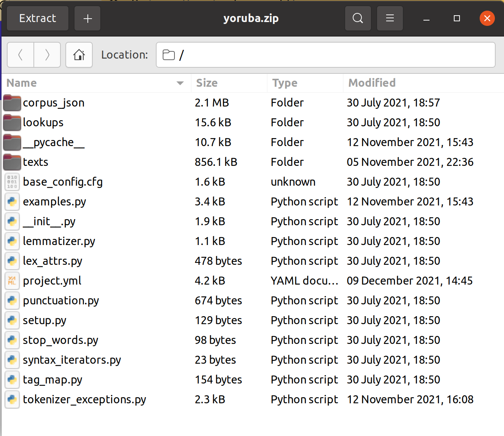

17. Preparation for Workshop II¶
17.1. spaCy course¶
If you are eager to get started or feel you might need some extra time to get aquanted with model training, Ines Montani recently updated her online course here https://course.spacy.io/en/chapter4
17.2. GitHub repository for your data¶
In the New Languages for NLP GitHub organization, you will find a repository template with your language’s name on it.
Clone the repository to your local machine. The GitHub docs have great instructions if this is an unfamiliar task: https://docs.github.com/en/repositories/creating-and-managing-repositories/cloning-a-repository
Confirm that you can access and push data to repo. Here’s an helpful how-to tutorial for this task with VSCode: https://zeroesandones.medium.com/how-to-commit-and-push-your-changes-to-your-github-repository-in-vscode-77a7a3d7dd02
17.3. Export from Cadet¶
Step #8 in Cadet is “Export for Model Training.” This will generate a zip file and download it to your local computer. If you run into any problems during export please write to Andy.
On your computer, unzip the file and save the files in a place that you can find easily such as the Desktop or a projects directory.

Move the files in texts to 0_original_texts
Move the file in lookups to 1_lookups_data
Move everything else but corpus_json to 2_new_language_object
Track these new files with git and push them to the repository.
17.4. Export from inception¶
Go to inception.slovo.world and login
Go to Projects and select your project
For your files to be available in the Curation menu, you will need to close them in Annotation. To do this, go to Annotation, then open the file. Click on the little lock icon to “Close File.” This can take a few seconds to complete. You can always re-open to continue work.
Open each text individually in the Curate menu. When you’re ready to export, click on the “Export Document” button. If you are exporting annotations for tokenization, part of speech, lemmata, and features, choose the conllu format. For named entities, you can select CoNLL CoreNLP.
Download your files to the 3_inception_export folder
Commit and push everything to Github
It is possible to download all of the project files all at once from Project>Settings. If you strongly prefer this approach, please be sure to rename the CURATION_USER.conllu files to match the original names.